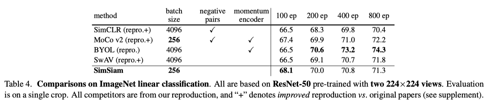
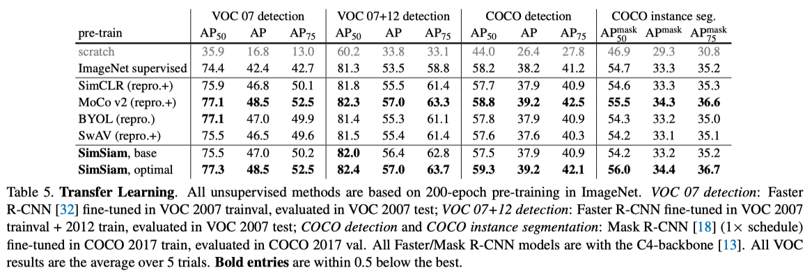
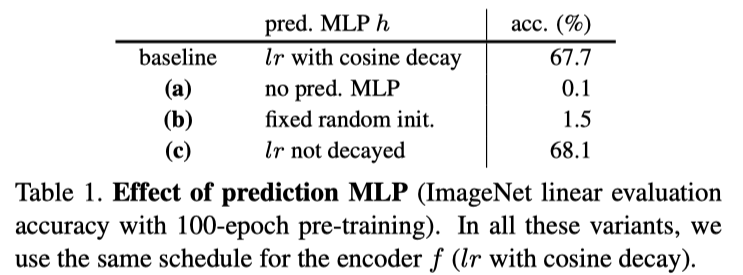
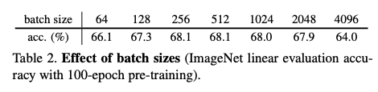
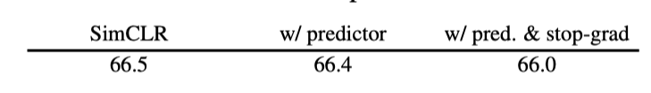

著者: Xinlei Chen, Kaiming He (Facebook AI Research (FAIR))
CVPR’21 Best Paper Honorable Mentions https://arxiv.org/pdf/2011.10566.pdf
BYOLをシンプルにした
negative pair 使わない (BYOLと同じ)
momentum update 不要 (target networkを使わない)
batch size小さくてもOK
Linear Evaluation
100epoch以降は、BYOLには負けるが SimCLRとかには勝っている
transfer learning タスクでは強い
準備
encoder (backbone + MLP) \(f\) と predictor (MLP) \(h\) を用意
以下繰り返し
\(x_1 = \text{aug}(x), x_2 = \text{aug}(x)\)
\(f(h(x_1))\) と \(\text{sg}(f(x_2))\) の距離を最小化 (sgは stop gradient)
厳密には入力を入れ替えた \(f(h(x_2))\) と \(sg(f(x_1))\) の距離も最小化
(BYOLと同様negative pairを使っていないので、崩壊するように思えるが崩壊しない)
Fig2. Stop gradient しないと崩壊する
ロスはゼロになるが、出力の各次元の分散は0になり精度は上がらない
Tab1. predictor (MLP) がないと崩壊する
Tab2. batch size大きくしても精度上がらない
Tab3. MLPにBatch Normalization いれないと精度が大きくさがる (一番うしろにBN入れると安定しない)
BYOLでも同じような結果になるらしい
(なぜ崩壊しないかの仮説ではない、SimSiamがどういう学習をしているのかの仮説)
以下のロス関数を考える
\(\mathcal{F}\) : ネットワーク (それのパラメータを \(\theta\) とする)
\(\eta\) : another set of variables (\(\eta\) のサイズは画像の数に比例する, \(\eta\) はネットワークの出力である必要はない)
そして、\(\mathcal{L}(\theta, \eta)\) を \(\theta, \eta\) に関して最小化することを考える. 交互最適化で最適化することを考える
\(\theta\) に関してはSGDで解けばいい.
\(\eta\) に関する最適化は 各々の \(\eta_x\) について独立に解ける. それでMSEなので、簡単に以下のように解ける.
SimSiamは (predictorを考えないと) この交互最適化の近似だとみなせる
(1) は \(\mathbb{E}_{\mathcal{T}}\) を 一回のaugmentation \(\mathcal{T'}\) によって近似すると以下になる
\(\eta\) についての最適化問題に (2) を代入すると、以下になって predictorを考えないと SimSiamの更新式みたいになる
Predictor \(h\) のことを考える
\(h\) は定義より, \(\mathbb{E}_{z}[\|h(z_1) - z_2\|_2^2]\) を最小化することが期待される (???)
この最適解は \(h(z_1) = \mathbb{E}_z[z_2] = \mathbb{E}_{\mathcal{T}}[f(\mathcal{T}(x))]\) を満たして、 (2) で (1) を近似したときのギャップを埋めてくれる (???)
わからないポイント: SimSiamは \(h\) と \(f\) を一緒に最適化されるので、そうはならんのでは?
実験的に証明すると言っている
(2) のように更新するのではなく、moving-averageする (momentum update)
つまり、 \(\eta_x^t \leftarrow m \eta_x^{t-1} + (1-m) \mathcal{F_{\theta^t}}(\mathcal{T}'(x))\)
こうすることによって、55%の精度が出せる
表1(a)に示したように、predictorもmomving-averageもしないと崩壊する
「この実験によって、predictor が \(\mathbb{E}_{\mathcal{T}}[\cdot]\) を関連していることが裏付けられた」と主張している
Q: PredictorやStop gradientをSimCLRに導入するとどうなるのか?
A: 精度は上がらない
{kind=link}
{kind=link}
{kind=link}
{kind=link}
{kind=link}
{kind=link}
{kind=link}
{kind=link}